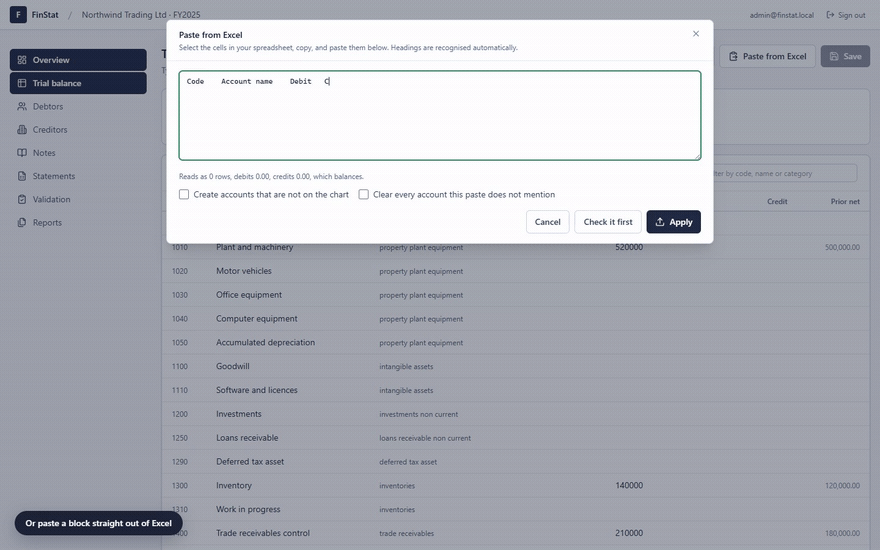
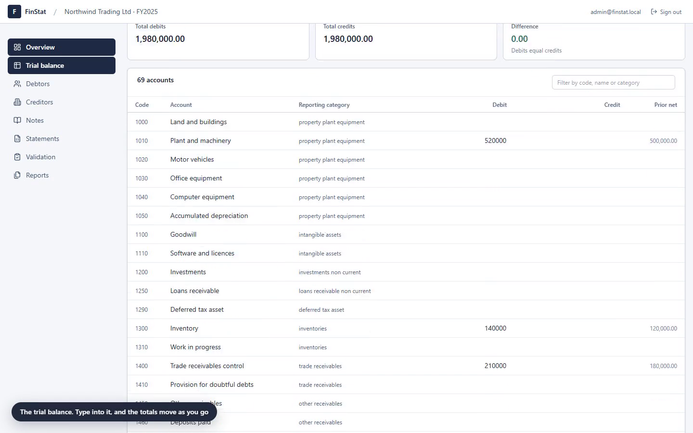
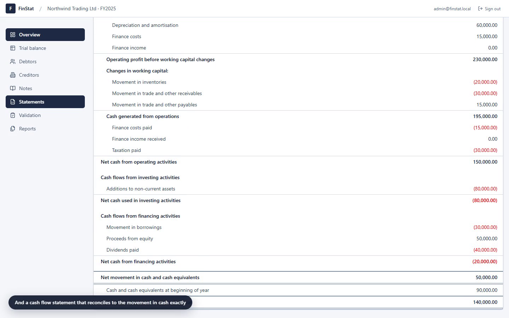
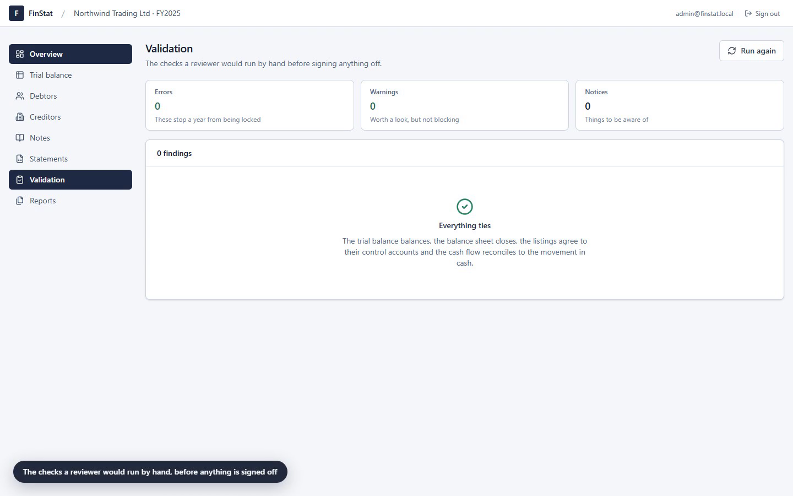
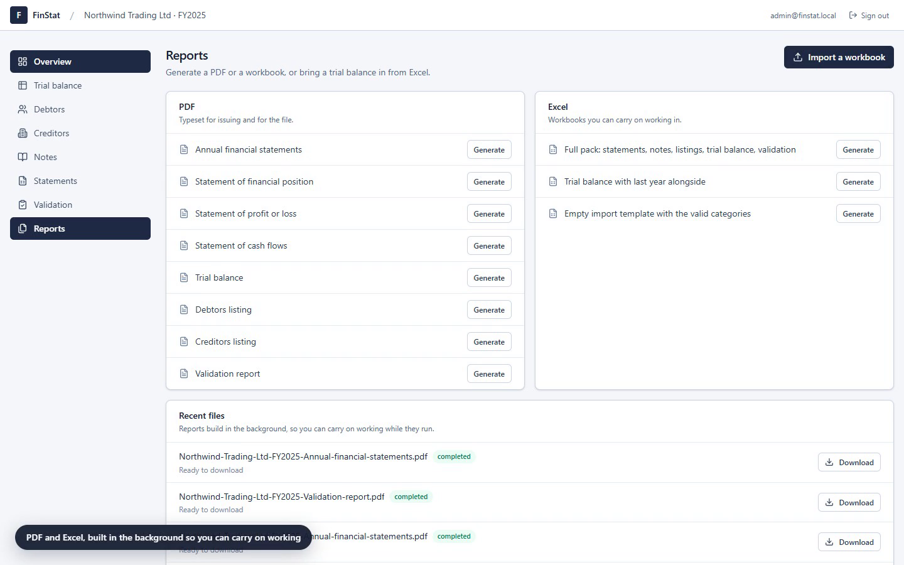

Web based financial statement preparation. Capture a trial balance and the balance sheet, profit and loss, cash flow statement and notes are derived from it, with every figure traced back to one account on one chart.

Why it is harder than it looks
Anyone can render a table of figures. The work is in making the three statements agree with each other, with the subledgers, and with last year, and in saying so out loud when they do not.
The model is a pre-closing trial balance: it carries the profit and loss accounts alongside retained earnings brought forward. Writing every balance debit-positive, if debits equal credits then the sheet has to close.
assets + expenses
− liabilities − equity − income = 0
assets = liabilities + equity
+ (income − expenses)
assets = liabilities + equity + profit
So folding the year's profit into retained earnings balances it exactly. Any imbalance a user sees is real, never an artefact of the engine.
Indirect method, built from the movement between two balance sheets plus the current year's profit and loss. Every balance sheet section belongs to exactly one bucket, so the computed movement equals the actual movement in cash exactly rather than approximately.
Where it does not reconcile, the difference is surfaced as a validation failure instead of being plugged. A hundred randomised second years are tested for this on every run.
An uploaded workbook is flattened to the same tab separated form the clipboard produces, so importing a file and pasting a block go through one parser and can never disagree about what a row means.
It handles what Excel actually puts on the clipboard: quoted cells containing tabs, CRLF row breaks, and amounts written as 1,234.56, 1.234,56, (1,234.56) or 1234.56-.
Walkthrough
Sign in, the chart of accounts, trial balance entry, the Excel paste, the debtors listing reconciling to its control account, all three statements, the validation run, the notes, report generation, and carrying a year forward into the next one.
The recording is scripted rather than hand captured. A script drives the real app in Chrome, records it through the DevTools screencast, and encodes it with ffmpeg, so re-running it produces the same walkthrough against the current build.




What it does
Multi-tenant, with five ranked roles per company and a year lifecycle from draft through to closed.
Every account maps to one statement line. A seventy account template gets a new company reporting immediately.
Type into the grid, paste from Excel, or import a workbook. Every path previews before it writes.
Aged listings that have to agree to their control accounts, with the difference reported when they do not.
Policies you write, plus notes generated from the figures. Editing a generated note makes it yours.
Balance sheet, profit and loss, and an indirect cash flow, each with comparatives and note references.
Balance sheet accounts open where they closed. Profit and loss starts at nil. Listings and policies come across.
Typeset PDF packs and working Excel workbooks, queued on BullMQ so a long export never blocks a request.
Every change to a company, who made it and when, readable by anyone with reviewer access.
Validation
They never change a number. They report what does not tie, with the amount. Errors block a year from being locked; warnings do not.
The wrong-side check looks at section totals rather than individual accounts. Contra accounts are ordinary bookkeeping: accumulated depreciation is a credit inside property, plant and equipment, and dividends declared is a debit inside equity. Flagging those one by one would bury the case that actually matters.
Architecture
The statement engine is a plain TypeScript package with no framework and no database. The API calls it to render a PDF; the browser calls it to preview a figure the user just typed. That is why a number on screen cannot drift away from the number in the report.
The reporting taxonomy, the statement builders, the validation rules, the clipboard parser and cent-exact money arithmetic. Pure functions, fully unit tested.
NestJS with Prisma over PostgreSQL, JWT auth with refresh token rotation, guards that scope every request to a company and a year, and BullMQ workers on Redis for reports.
Next.js App Router with TanStack Query and Tailwind. A spreadsheet-like grid, paste handling, statement rendering and print styles.